Introduction
Overview
Oncology is in the midst of a paradigm shift towards personalized medicine with the increased wave of next-generation sequence data from labs and clinics. To the modern cancer biologist, the genomic and transcriptomic features of a patient’s tumor have the potential to function as a key guide for selecting patient treatments. Clinical trials remain costly, however, and the need for reliable biomarkers for cancer drug sensitivity is as great as ever.
Enter the Cancer Cell Line Encyclopedia (CCLE), a collection of open access whole genome, whole exome, and RNA-seq datasets encompassing nearly 1000 human cancer cell lines. A project of the Broad Institute, Novartis Institutes for Biomedical Research, and the Genomics Institute of the Novartis Research Foundation, the CCLE correlates genomic data from 947 human cancer cell lines with pharmacological profiles of 24 anticancer drugs.
The availability of these datasets allows for large-scale comparative analysis. The CCLE Correlation Analysis App can be used to identify features correlated with a gene mutation such as mutations in other genes, expression, and sample-level metadata.
Scope of the App
-
Annotate the column metadata with a gene mutation.
-
Filter samples from the expression data and metadata based on selection.
-
Analyze the correlation between the mutation status of the selected gene against the other features.
-
Performs univariate analysis like limma t-test along with multivariate analysis like PCA analysis.
Getting Started
User Input
The data files can be downloaded from DepMap portal. The DepMap release version and file type to be used are mentioned below.
-
CCLE expression: File “CCLE_expression_v2.csv” from DepMap Public 20Q2 data release at the DepMap portal.
-
CCLE mutation: Mutation File - File “CCLE_mutations.csv” from DepMap Public 20Q2 data release at the DepMap portal.
-
CCLE metadata: File “sample_info.csv” from DepMap Public 20Q2 data release at the DepMap portal.
Tutorial
Select CCLE Correlation Analysis App from the dashboard under the Studio Presets tab.
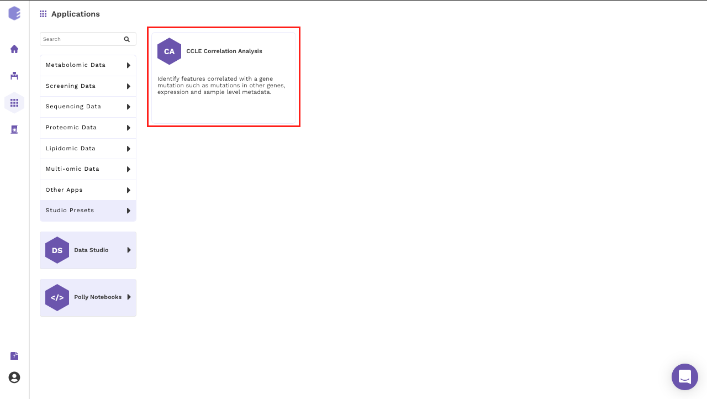
Select an existing Workspace from the drop-down and provide the Name of the Session to be redirected to CCLE Correlation Analysis Preset's upload page.
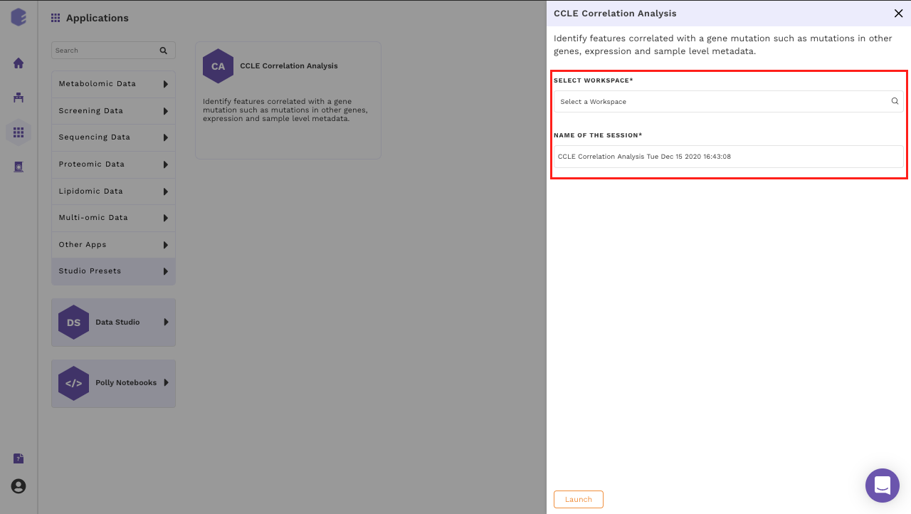
Data Curation
Upload Files
The first component is the Upload component which allows you to upload the input files required for processing through the app. It includes the raw expression, sample metadata and mutation files from CCLE.
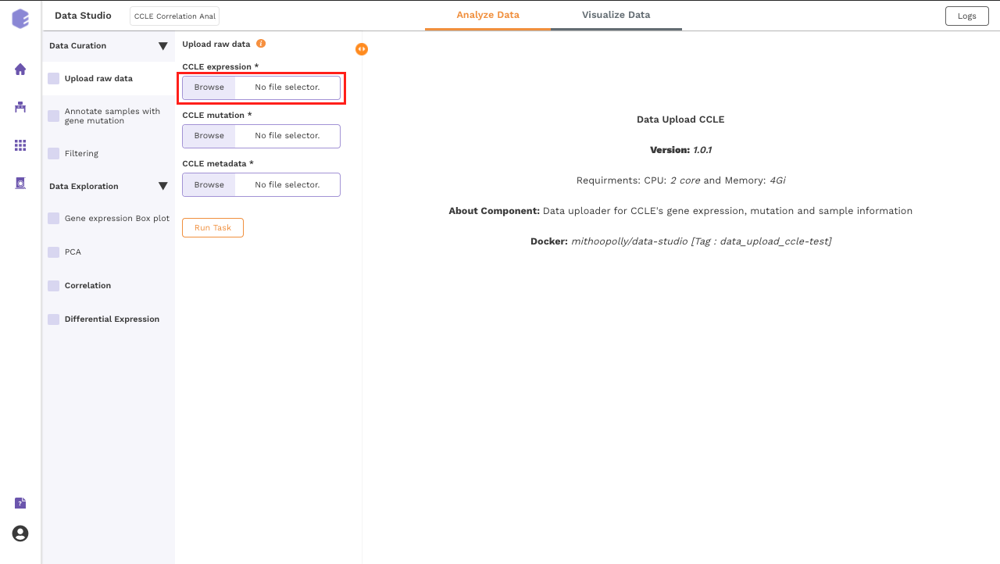
To upload the input files, Click on Browse, which will open a sliding menu containing the data files in the selected workspace. Select the desired file and click on Import.
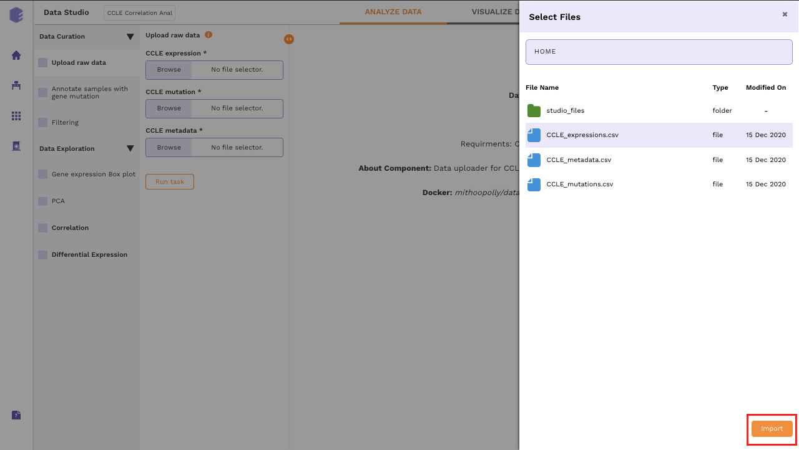
Once all the files are imported, click on Run Task to execute the component.
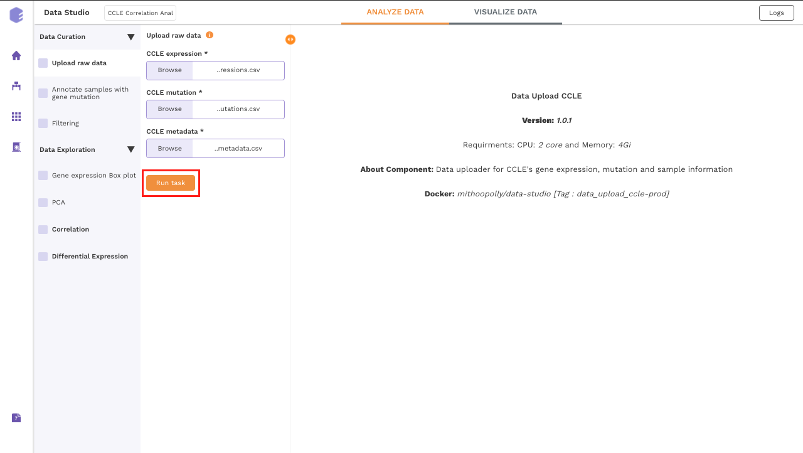
It will generate three output files:
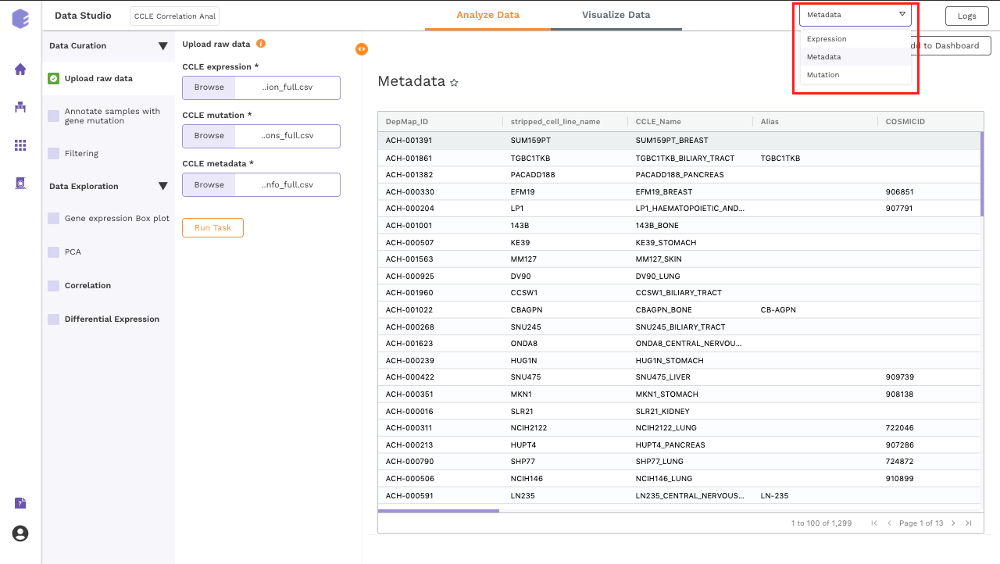
-
Expression matrix: Table for the expression values of genes in cell lines with genes in rows and samples in columns.
-
Mutation matrix: Table depicting the presence and absence of gene mutations in cell lines.
0srepresent the wild-type genes and1srepresent mutated genes. -
CCLE metadata: Table for the metadata information associated with each cell line. Rows represent samples and columns represent various attributes of the samples.
Annotate samples with gene mutation
This component allows you to annotate the column metadata with the gene mutation.
- Mutation Gene: Select a gene for annotation using the dropdown menu of Mutation Gene. Across samples, the mutation status of this gene will be correlated with various features such as the expression of other genes and the sample level metadata. Once all the fields are filled, Click on Run Task to execute the component.
Note:
- The expression outputs generated at the previous step are used as an input here. These input files are not required to be added at each step. They automatically get mapped from the previous component.
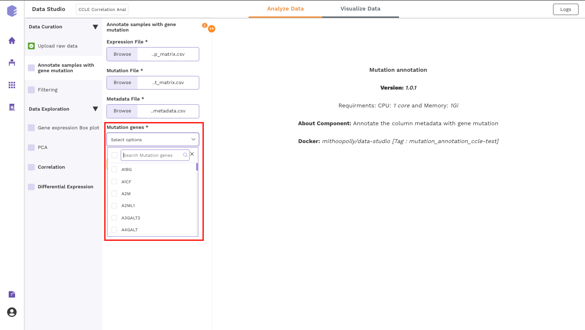
The generated output:
- CCLE annotated metadata: New column will be added which has the information about the mutation status of the selected gene across all the samples. If multiple genes are selected, then multiple columns will be added.
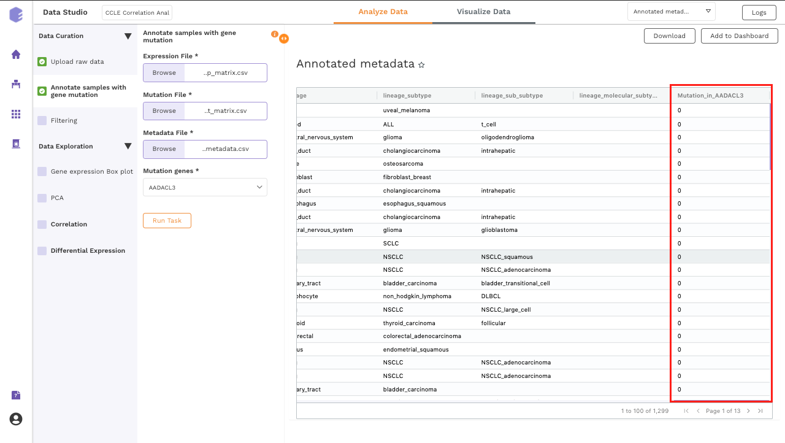
Filtering
This component is used to filter samples from the expression data and metadata based on your selection. The component provides an option to choose a column and subsequent value from within that column to subset the data.
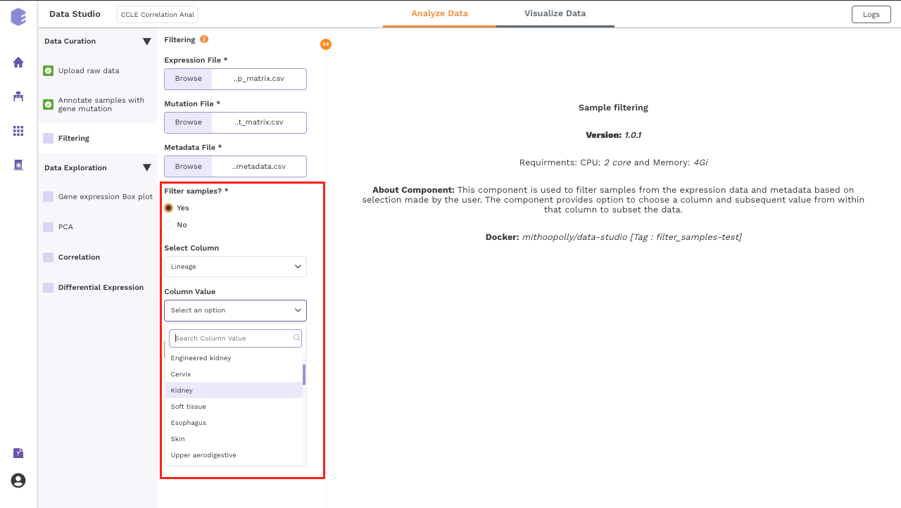
-
Filter samples?: It provides two options - Yes and No. If 'No’ is selected, then no filtering is applied to the data and all the samples are available for usage in the downstream components. If 'Yes' is selected, then you must select the options for filtering from the beneath dropdowns.
-
Select Column: Names of the columns from the metadata file are enlisted here for you to choose.
-
Column Value: Once a column has been selected in the Select Column dropdown, then all the unique values from the selected column are available for you to pick from.
Once all the fields are selected, click on Run Task to execute the component. It will generate three output files:
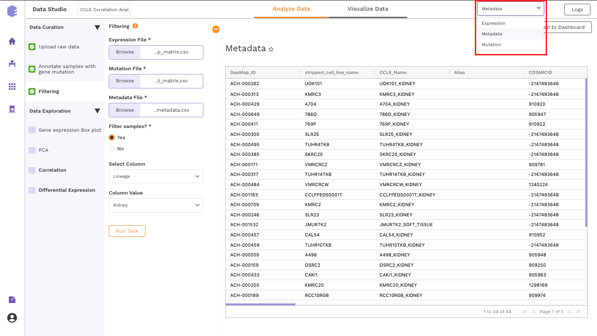
-
Expression data: Subsetted expression data with filtered samples.
-
Mutation data: Subsetted mutation matrix with filtered samples.
-
Metadata: Subsetted metadata with filtered samples.
Data Exploration
Gene expression Box plot
This component generated a gene expression Boxplot. It is a visualization component that uses a five-number summary (minimum, first quartile, median, third quartile, and maximum) to display the distribution of data based on quartiles. Outliers are also displayed as individual points.
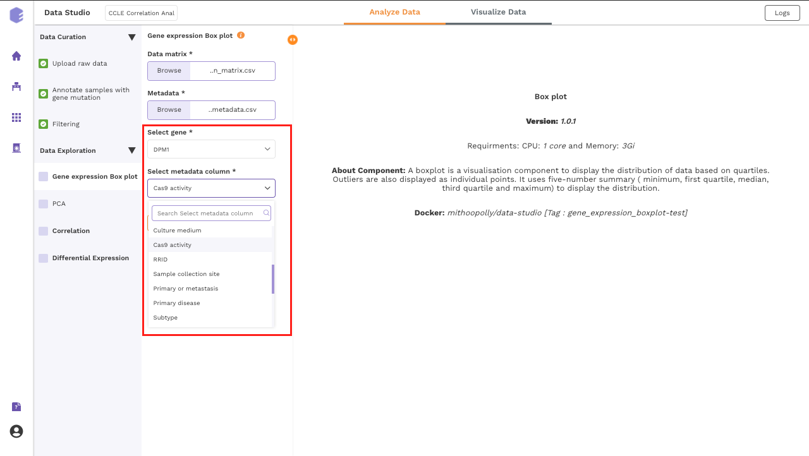
-
Select gene: Dropdown for picking the gene for which the boxplot is to be made.
-
Select metadata column: Dropdown to select one of the metadata columns.
After executing the component, an interactive Boxplot will be generated as an output.
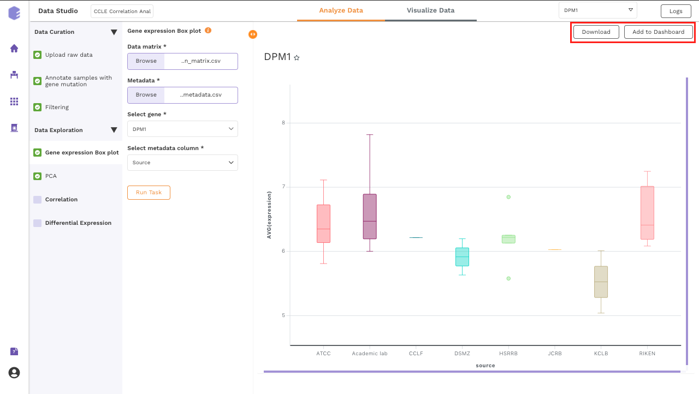
PCA
This component allows you to simplify the complexity of high-dimensional data while retaining the trends and patterns in it. It projects the data onto a lower dimension with an objective to find the best summary of the data using a limited number of principal components that help in understanding the clustering pattern between biologically grouped and ungrouped samples.
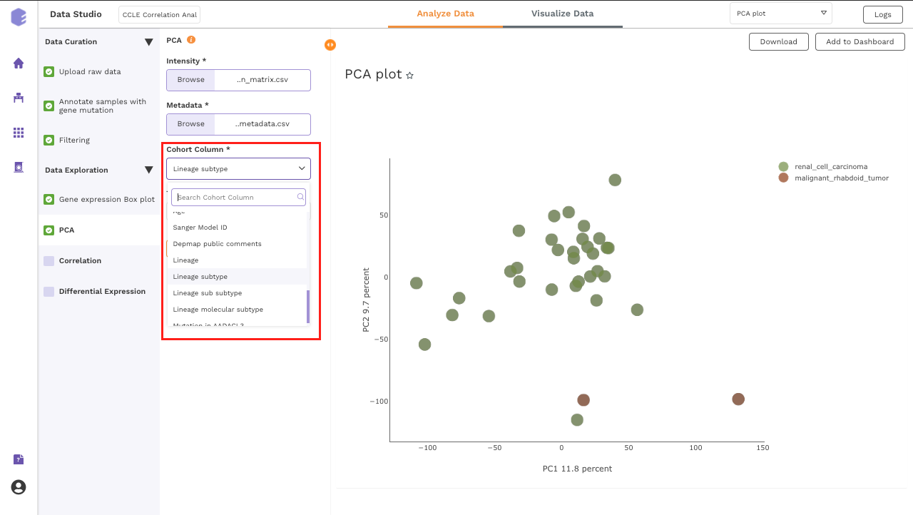
-
Cohort Column: Dropdown to select one of the metadata columns.
-
Top N Variants: The top N variable entities will be used for PCA calculation. Define the number in this box. The default number used is 1500.
It generates two outputs:
-
PCA Plot: A plot is created where the samples are labeled based on the cohort selected in the metadata column. When you hovers over the points, sample ID and percentage of variance explained by each principal component are displayed along with the cohort.
-
PCA Score: Table of the first 10 PC values and metadata columns.
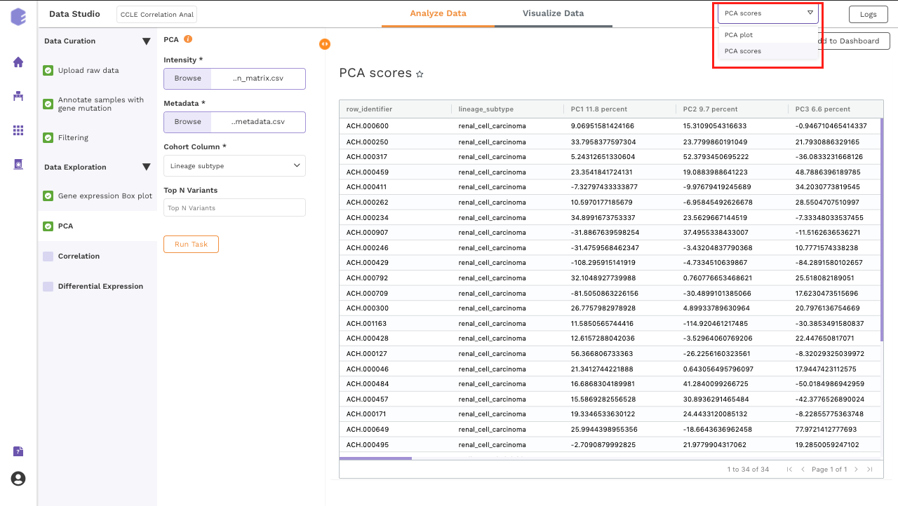
Correlation
This component uses Fisher's exact test to test for correlation between the mutation status of the selected gene against the other selected features.
-
Correlation with other gene mutations - A contingency table for each gene with the mutation count across all the samples for the selected gene and the gene against which the test is to be done.
-
Correlation with metadata - The selected metadata column is split so that each newly created column represents one unique value from the column and the values represent the presence(1) or absence(0) of that feature. Contingency table created for each of these columns separately.
-
Correlation with expression - The gene expression values are binarised and samples are labeled Highly expressed where there is at least one standard deviation difference on the higher side. Rest are labeled Not expressed. A contingency table is then created.
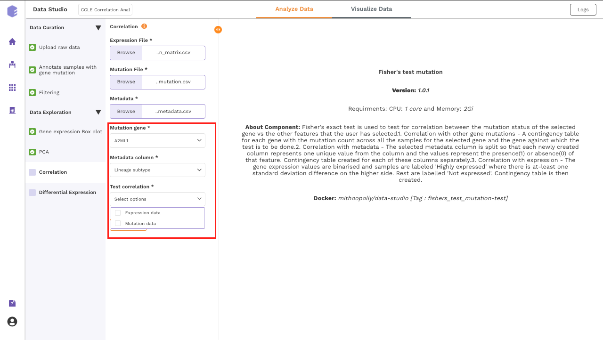
-
Mutation gene: Dropdown for picking the gene for which its mutation status across samples will be correlated with various features such as expression of other genes and the sample level metadata.
-
Metadata column: Dropdown to select one of the metadata columns.
-
Test correlation: Multi-select dropdown with two options - expression data and mutation data. You can select either of them or both. The component performs Fisher's exact test to test for correlation of the mutation status of the selected gene vs the options picked here.
Once all the parameters are selected, execute the component by clicking on Run Task. It will generate three output files:
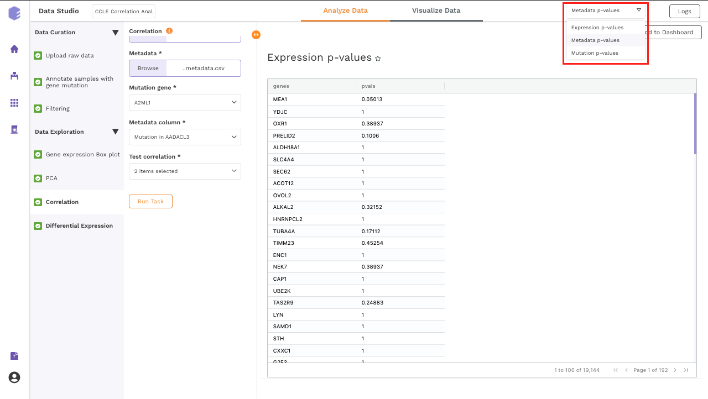
-
Pvals Metadata: Table for p-values of Fisher's exact test of selected gene mutation against all the unique values from the metadata column selected.
-
Pvals Expression: Table for p-values of Fisher's exact test of selected gene mutation against the binarised expression values of all the genes present in the expression matrix.
-
Pvals Mutation: Table for p-values of Fisher's exact test of selected gene mutation against the mutation status of all the genes in the mutation matrix.
Differential Expression
This component allows the search for differentially expressed (DE) genes, that is, genes that show differences in expression level between conditions or in other ways are associated with given predictors or responses.
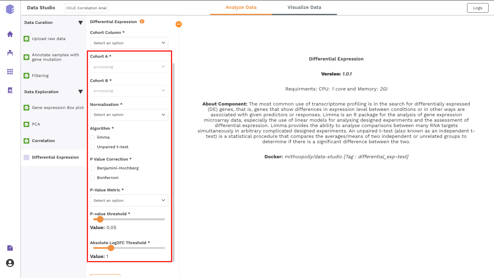
-
Cohort Column: Dropdown to select one of the metadata columns.
-
Cohort A: Dropdown to select a cohort from the metadata column selected.
-
Cohort B: Dropdown to select another cohort from the metadata column selected.
-
Normalization: Perform log2normalization if data is not normalized.
-
Algorithm: You can select any one of the two algorithms - limma or Unpaired t-test.
Limma is an R package for the analysis of gene expression microarray data, especially the use of linear models for analyzing designed experiments and the assessment of differential expression. Limma provides the ability to analyze comparisons between many RNA targets simultaneously in arbitrary complicated designed experiments.
An unpaired t-test (also known as an independent t-test) is a statistical procedure that compares the averages/means of two independent or unrelated groups to determine if there is a significant difference between the two.
-
P-Value Correction: You can select the Benjamini-Hochberg method to correct the p-value for False Discovery Rate or the Bonferroni method to correct the p-value for Type I errors.
-
P-Value Metric: Plot and calculate significance using the selected metric. p-value is the value returned by the algorithm while Adjusted p-value is the corrected value after applying one of the correction methods above.
-
P-value threshold: You can select the appropriate threshold for the selected p-value metric. *p8-values lower than this threshold will be marked as significant.
-
Absolute Log2FC Threshold: You can select the appropriate fold change threshold. Log2fold change values higher than this will be marked as significant.
Once all the parameters are selected, execute the component by clicking on Run Task. It will generate thwo outputs:
-
Differential Expression: Table with Differential Expression results with p-value and fold change.
-
Volcano Plot: Based on the parameters specified, a volcano plot is displayed. The volcano plot helps in visualizing metabolites that are significantly dysregulated between two cohorts.
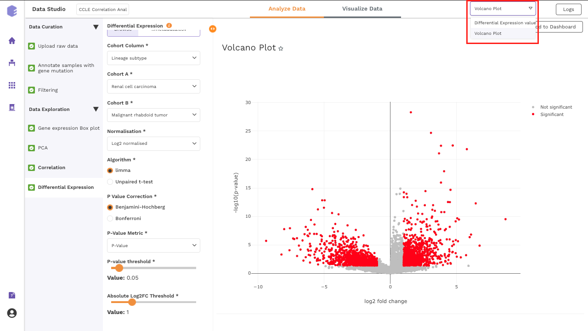
Dashboard
Data Studio lets you visualize your data with the number fo highly configurable charts and tables, which you can save and add to dashboards and then customize as needed. The Visualization Dashboard provides an at-a-glance view of the selected visualization charts. The dashboard is customizable and can be organized in the most effective way to help you understand complex relationships in your data and can be used to create engaging and easy-to-understand reports. A template of the report can also be defined to generate the output if required.
The generated reports are interactive and can be shared with the collaborators. You can easily communicate and act on the customized data where all the members of your team can compare, filter and organize the exact data they need on the fly, in one report.